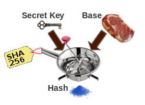
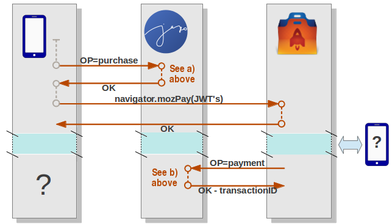

[adapted from http://openid.net/specs/draft-jones-json-web-token-07.html 3.1 Examples JWT]
{"typ":"JWT","alg":"HS256"}
Base64url encoding the bytes of the UTF-8 representation of the JWT Header
yields this Encoded JWS Header value:
eyJ0eXAiOiJKV1QiLCJhbGciOiJIUzI1NiJ9
{
"iss": "11111111-2222-3333-9999-deadbeef4321",
"aud": "marketplace.firefox.com",
"typ": "mozilla/payments/pay/v1",
"iat": 1366388341,
"exp": 1682612341,
"request": {
"id": "aaaaaaaa-1111-bbbb-2222-cccccccccccc",
"pricePoint":1,
"name": "MagicMystic",
"description": "Adventure In the Middle of Nowhere",
"productData": "abracadabra-12345",
"postbackURL": "https://www.jaxo.com/magicmystic&agree=YES",
"chargebackURL": "https://www.jaxo.com/magicmystic&agree=NO"
}
}
Base64url encoding the bytes of the UTF-8 representation of the
JSON Claims Set yields this Encoded JWS Payload value
ewoiaXNzIjogIjExMTExMTExLTIyMjItMzMzMy05OTk5LWRlYWRiZWVmNDMyMSIsCiJhdWQiOiAibWFya2V0cGxhY2UuZmlyZW ZveC5jb20iLAoidHlwIjogIm1vemlsbGEvcGF5bWVudHMvcGF5L3YxIiwKImlhdCI6IDEzNjYzODgzNDEsCiJleHAiOiAxNjgy NjEyMzQxLAoicmVxdWVzdCI6IHsKICAiaWQiOiAiYWFhYWFhYWEtMTExMS1iYmJiLTIyMjItY2NjY2NjY2NjY2NjIiwKICAicH JpY2VQb2ludCI6MSwKICAibmFtZSI6ICJNYWdpY015c3RpYyIsCiAgImRlc2NyaXB0aW9uIjogIkFkdmVudHVyZSBJbiB0aGUg TWlkZGxlIG9mIE5vd2hlcmUiLAogICJwcm9kdWN0RGF0YSI6ICJhYnJhY2FkYWJyYS0xMjM0NSIsCiAgInBvc3RiYWNrVVJMIj ogImh0dHBzOi8vd3d3LmpheG8uY29tL21hZ2ljbXlzdGljJmFncmVlPVlFUyIsCiAgImNoYXJnZWJhY2tVUkwiOiAiaHR0cHM6 Ly93d3cuamF4by5jb20vbWFnaWNteXN0aWMmYWdyZWU9Tk8iCiAgfQp9
eyJ0eXAiOiJKV1QiLCJhbGciOiJIUzI1NiJ9 . ewoiaXNzIjogIjExMTExMTExLTIyMjItMzMzMy05OTk5LWRlYWRiZWVmNDMyMSIsCiJhdWQiOiAibWFya2V0cGxhY2UuZmlyZW ZveC5jb20iLAoidHlwIjogIm1vemlsbGEvcGF5bWVudHMvcGF5L3YxIiwKImlhdCI6IDEzNjYzODgzNDEsCiJleHAiOiAxNjgy NjEyMzQxLAoicmVxdWVzdCI6IHsKICAiaWQiOiAiYWFhYWFhYWEtMTExMS1iYmJiLTIyMjItY2NjY2NjY2NjY2NjIiwKICAicH JpY2VQb2ludCI6MSwKICAibmFtZSI6ICJNYWdpY015c3RpYyIsCiAgImRlc2NyaXB0aW9uIjogIkFkdmVudHVyZSBJbiB0aGUg TWlkZGxlIG9mIE5vd2hlcmUiLAogICJwcm9kdWN0RGF0YSI6ICJhYnJhY2FkYWJyYS0xMjM0NSIsCiAgInBvc3RiYWNrVVJMIj ogImh0dHBzOi8vd3d3LmpheG8uY29tL21hZ2ljbXlzdGljJmFncmVlPVlFUyIsCiAgImNoYXJnZWJhY2tVUkwiOiAiaHR0cHM6 Ly93d3cuamF4by5jb20vbWFnaWNteXN0aWMmYWdyZWU9Tk8iCiAgfQp9
123456789abcdef123456789abcdef123456789abcdef123456789abcdef123456789abcdef123456789abcdef123456
gnYt9nrAfn_XkTtTtBCMQ2XoMI7dEeHv8tpjUx8jWb8
eyJ0eXAiOiJKV1QiLCJhbGciOiJIUzI1NiJ9 . ewoiaXNzIjogIjExMTExMTExLTIyMjItMzMzMy05OTk5LWRlYWRiZWVmNDMyMSIsCiJhdWQiOiAibWFya2V0cGxhY2UuZmlyZW ZveC5jb20iLAoidHlwIjogIm1vemlsbGEvcGF5bWVudHMvcGF5L3YxIiwKImlhdCI6IDEzNjYzODgzNDEsCiJleHAiOiAxNjgy NjEyMzQxLAoicmVxdWVzdCI6IHsKICAiaWQiOiAiYWFhYWFhYWEtMTExMS1iYmJiLTIyMjItY2NjY2NjY2NjY2NjIiwKICAicH JpY2VQb2ludCI6MSwKICAibmFtZSI6ICJNYWdpY015c3RpYyIsCiAgImRlc2NyaXB0aW9uIjogIkFkdmVudHVyZSBJbiB0aGUg TWlkZGxlIG9mIE5vd2hlcmUiLAogICJwcm9kdWN0RGF0YSI6ICJhYnJhY2FkYWJyYS0xMjM0NSIsCiAgInBvc3RiYWNrVVJMIj ogImh0dHBzOi8vd3d3LmpheG8uY29tL21hZ2ljbXlzdGljJmFncmVlPVlFUyIsCiAgImNoYXJnZWJhY2tVUkwiOiAiaHR0cHM6 Ly93d3cuamF4by5jb20vbWFnaWNteXN0aWMmYWdyZWU9Tk8iCiAgfQp9 . gnYt9nrAfn_XkTtTtBCMQ2XoMI7dEeHv8tpjUx8jWb8
A trap in which I fall, and you have some chances to do as well.
As stated by RFC 4648, Base64Url is not Base64:
When it comes onto the JavaScript side, it becomes even worst. Reason is that JavaScript knows "glyphs" (character such as this one: 煲), while Base64/Base64URL just want to hear of "octets" (煲 is ONE character weighting SIX UTF octets). UTF-8 is what you must use for JWT.
Don't think, even a second, you could use atob() or btoa(). You have been warned.
The solution for me was to write the proper Base64.Url encoder/decoder
for both JavaScript and Java.
Cut and Paste, here they are.
| Secret Key |  |
| + | |
| Base an arbitrary Block of Data | |
| => | |
| Signature a fixed-length array of bytes, aka Hash |
Fortunately, Java provides us with most well-known hash engines, so that the code drastically reduces to just:
import javax.crypto.Mac;
import javax.crypto.spec.SecretKeySpec;
class Foo {
private static final String ENC = "UTF-8";
private static final String ALGO = "HmacSHA256";
static byte[] getSignature(String secretKey, String base) throws Exception {
Mac mac = Mac.getInstance(ALGO);
mac.init(new SecretKeySpec(secretKey.getBytes(ENC), ALGO));
return mac.doFinal(base.getBytes(ENC));
}
}
It is required to understand JSON on the server side, because that is the mean the Mozilla MarketPlace informs about the result of the payment transaction.
The "JWT Claim" is also formulated in JSON, but it is just easy in Java to assemble the appropriate String perhaps with the help of StringBuilder, StringBuffer.
"To read JSON" means a JSON Parser, and "Server side" means — in my case — that it is written in Java. JSON (RFC 4627) is not a complex format. JSON is well implemented in JavaScript, for which it was designed. What about Java?
At the beginning, I thought it should be easy to find a couple of hundred lines
of robust and elementary Java code to do the work,
a monolithic and small Java program, no jars, no library dependencies, no useless
rings and bells: my goal is just to extract the value of the productData field
as returned by the MarketPlace. Why would I need a steam-machine for this job?
These lines, for instance:
public static String getProductData(String notice, String name) {
String key = "\"productData\"";
int start = notice.indexOf(key);
if (start >= 0) {
start = notice.indexOf('"', start+key.length()+1) + 1;
return notice.substring(start, notice.indexOf('"', start));
}else {
return null;
}
}
I found nothing that truly satisfied my needs.
Parsing is one of my hobby, and I decided to spend a day
implementing RFC 4627 from scratch.
Json.java is (yet another) JSON decoder for Java. It is strictly conforming to RFC 4627, does not reinvent the wheel, reusing most known, standard Java classes (List, Object, String, Boolean.) Although that wasn't absolutely required, it also has a JSON generator.
makePurchaseOrder
takes 2 arguments: an user identifier to uniquely identify the buyer, and
a URL where the MarketPlace is deemed to call back after the transaction
between the buyer and the payment provider is ended.
The user identifier will be the value of the JWT request.productData
field.
navigator.mozPay passing the signed
JWT(s) in an array as an argument to the mozPay call.
getPaymentNotice verifies the correctness of the response
gotten from the callback. Is that really coming from Mozilla?
Note that makePurchaseOrder takes only one URL, used for both granted
or denied payment (postback and chargeback).
To ease the coding, a query parameter simply differentiates
the granted callback URL from the denied one
(agree=YES or agree=NO.)
We now are almost ready to enter the JWT dance.
GET www.jaxo.com/foobar?OP=purchase
pay Entity with two properties:
the state, initialized to pending, and
a date, set to the actual UNIX time
Entity pay = new Entity("Pay");
pay.setProperty("state", "pending");
pay.setProperty("created", new Date());
DatastoreServiceFactory.getDatastoreService().put(pay); String paykey = KeyFactory.keyToString(pay.getKey());Here, for the sake of showing a working example, we make use of the Google App Engine Datastore Service, that is,
com.google.appengine.api.datastore.Entity, Key, etc.
For other kind of servers, you would use the most appropriate per-app-storage.
Jwt.makePurchaseOrder.
The first argument (paykey) uniquely identifies our user.
The second argument (url) is where, in a later step,
Mozilla MarketPlace will call us back when the transaction has ended.
String jwt = Jwt.makePurchaseOrder( paykey, getBaseUrl(request) + "/foobar?OP=payment&agree=" // YES or NO );
response.getWriter().print(jwt);
navigator.mozPay
passing the signed JWT as an argument…
GET www.jaxo.com/foobar?OP=payment&agree=YES |
if the buyer agreed to pay | |
GET www.jaxo.com/foobar?OP=payment&agree=NO |
if the buyer changed her/his mind |
Jwt.getPaymentNotice to insure that the callback
is really coming from the Mozilla MarketPlace, and to get the notice in readable
format.
String notice = Jwt.getPaymentNotice(request.getParameter("notice"));
Json class,
extract the field productData from the notice field:
this is the key to our Datastore pay Entity;
retrieve the relevant pay Entity.
Also, extract the transactionID from the response field:
we need it to answer to the MarketPlace request.
Entity pay = null;
String transactionID = null;
for (Json.Member m1 : ((Json.Object)Json.parse(notice)).members) {
if (m1.getKey().equals("request")) {
for (Json.Member m2 : ((Json.Object)m1).members) {
if (m2.getKey().equals("productData")) {
Key paykey = KeyFactory.stringToKey((String)m2.getValue());
pay = DatastoreServiceFactory.getDatastoreService().get(paykey);
break;
}
}
}else if (m1.getKey().equals("response")) {
for (Json.Member m2 : ((Json.Object)m1).members) {
if (m2.getKey().equals("transactionID")) {
transactionID = (String)m2.getValue();
break;
}
}
}
}
pay is not null.
pay.setProperty(
"notice",
new com.google.appengine.api.datastore.Text(notice)
);
if (req.getParameter("agree").equals("YES")) {
pay.setProperty("state", "granted");
}else {
pay.setProperty("state", "denied");
// should we store the reason ???
}
store.put(pay);
transactionID is not null.
response.getWriter().print(transactionID);
Recalling the Data Flow Diagram, the current situation is pictured as follows:
where the blue area represents the delay required for the buyer and the payment provider to terminate the transaction. There can be no clues on how long it will take: 10 seconds, an hour, or ... never ending!
The device being a "Client", there are no easy means to wake it up when the
payment has been received. So it has to be the other way: the device
queries regularly the Server about the state or the transaction.
This is named polling: the device issues several HTTP requests
getPayment to the Server, until the Server finishes
by answering "granted" or "denied".
|
The query parameter PYK is the pay key,
created above at a) 2..
We will examine later how the Client knows about it.
|
DatastoreService store = DatastoreServiceFactory.getDatastoreService();
Key paykey = KeyFactory.stringToKey(req.getParameter("PYK"));
Entity pay = null;
long created = 0;
String state = "unknown";
pay
entity from the DataStore, until the state property changes
from pending [see a) 1.]
to either denied or granted [see b) 3.]
for (int i=0; i < 40; ++i) {
pay = store.get(paykey);
state = pay.getProperty("state").toString();
if (state.equals("granted")) {
break;
}else if (state.equals("denied")) {
store.delete(paykey);
break;
}else {
try { Thread.sleep(1000); }catch (InterruptedException e1) {}
}
}
Why 'only' 40 times?
Because Servers do not like request that appear not responsive
— what sleep does.
For example, the Google App Engine raises a
DeadlineExceededException exception after about 60 seconds
spent in the request.
But that does NOT mean that the game is over after 40 seconds!
After returning, if the device (client) finds that the transaction
is not concluded
(state is neither granted, nor denied),
it can later re-issue another getPayment, or have a more elaborate
strategy.
if (pay != null) { // defense!
created = ((Date)pay.getProperty("created")).getTime();
}
String payment = "{\"state\":\"" + state + "\",\"date\":\"" + created + "\"}"
response.getWriter().print(payment);
state of
a purchase request — if any — as well as its paykey
after the purchase request has been sent.
getPayState() is a function that reads the device's local store for its
actual pay state:
undefined,
pending,
denied, or
granted;
getPayKey() is a function that reads the device's local store for the
value of the pay key
writePayment(paykey, state) stores the paykey and
the state of the payment.
Now, you need a "Buy" button:
It has been defined somewhere in your main index.html like:
<BUTTON id="btnBuy" style="display:none"><IMG src="coins.png"/></BUTTON>The JavaScript
window.onload()
checks the pay state, and if a payment is required,
the "Buy" button is displayed while its onclick event
triggers the purchase function,
if ((navigator.mozPay !== undefined) && (getPayState() !== "granted")) {
var elt = document.getElementById("btnBuy");
elt.style.display = "";
elt.onclick = purchase;
}
the purchase function being:
function purchase() {
var elt = document.getElementById("btnBuy");
elt.style.display = "none";
if (getPayState() === "pending") {
getPayment(elt, getPayKey());
}else {
var xhr = new XMLHttpRequest();
xhr.open("GET", http://www.jaxo.com/foobar?OP=purchase");
xhr.onreadystatechange = function() {
if (this.readyState === 4) {
if ((this.status === 200) || (this.status === 0)) {
var jwt = this.responseText;
/*
| extract the productData from the returned JWT.
| It is the stringized key (keyToString)
| of the "Pay" kind entity in Google App Datastore
*/
var ix = 1 + jwt.indexOf('.');
var paykey = JSON.parse(
Base64.Url.decode(
jwt.substring(ix, jwt.indexOf('.', ix))
)
).request.productData;
var req = navigator.mozPay([jwt]);
req.onsuccess = function() { getPayment(elt, paykey); };
req.onerror = function() { // mozPay failed
alert("Pay process" + this.error.name);
elt.style.display = "";
}
}else {
alert("Payment request: server error\nRC:" + this.status);
elt.style.display = "";
}
}
};
xhr.send();
}
}
getPayment() — described later —
is the function checking if the transaction has been concluded.
Its relevant argument is the paykey.
paykey is retrieved from the localStorage,
and getPayment()is directly called.
Jwt.makePurchaseOrder on the Server side.
responseText field is the JWT that the
Server created.
The request.productData field of the JWT contains the key that
uniquely identifies this purchase request (paykey).
navigator.mozPay() is called passing the JWT in an array,
as the argument call
navigator.mozPay() returns successfully,
getPayment()is called with the value of the paykey
that was computed.
getPayment() is in charge to poll the Server, checking
for a pending transaction being concluded.
The Javascript code is as follows:
function getPayment(elt, paykey) {
var xhr = new XMLHttpRequest();
xhr.open("GET", http://www.jaxo.com/foobar?OP=getPayment&PYK=" + paykey);
xhr.onreadystatechange = function() {
if (this.readyState === 4) {
if ((this.status === 200) || (this.status === 0)) {
var pay = JSON.parse(this.responseText);
var msg;
if (pay.state === "granted") {
msg = "granted pay";
}else {
elt.style.display = "";
if (pay.state == "denied") {
msg = "denied");
}else {
// assume pay.state is "pending"
if (getPayState() === "pending") { // for the 2nd time
// inform the payment is still pending
// propose a way to cancel it
return;
}else {
msg = i18n("pendingPay");
}
}
}
users.writePayment(paykey, pay);
alert("info", msg);
}else {
alert("Payment response: Server error\nRC:" + this.status);
elt.style.display = "";
}
}
);
}
Recall — as seen in c) 3. — that each getPayment
request to the Server may take as long as 40 seconds.
Thanks to XMLHttpRequest, the main thread of
the Browser's Javascript Engine will not be stuck while waiting.
In fact, XMLHttpRequest.open has been called with the
"asynchronous" argument set to its default value: "asynchronous=true".
That means that a gremlin has been assigned with the duty of watching
the Server response, freeing the browser from this boring task.
Firefox still responds to user actions, and so is the device.
What to do if, after 40 seconds, the Server has still no acknowledgments
from the Payment Provider? Being dependent of the type of Application,
it's up to you to define the right strategy…
One solution might be to issue an alert, after a given number of retries,
and propose to the user to abandon the transaction.
If the user confirms, you clean the local storage
(or create an abandon state) and
tell the Server to dismiss.